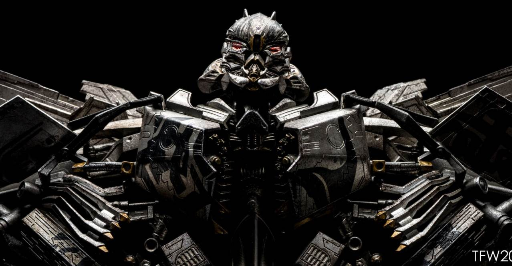
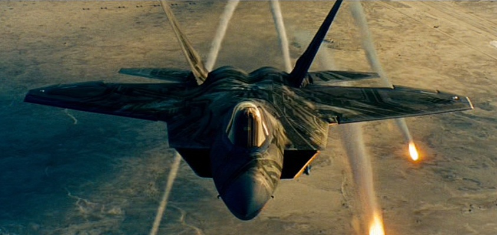

Với tư cách là Chỉ huy Không quân của lực lượng tấn công Decepticon và được cho là một trong những chiến binh nguy hiểm nhất của họ, Starscream coi mình là anh hùng ở phe sai lầm. Trong nhiều thế kỷ, anh ấy tin rằng cả Optimus và Megatron đã đánh mất điều gì là tốt nhất cho chủng tộc Cybertronian và chỉ đơn giản là theo đuổi các chương trình nghị sự của riêng họ. Mặc dù anh ấy trung thành với cái sau, anh ấy không đồng ý với nỗi ám ảnh của Megatron với AllSpark và quyết định rằng, vì lợi ích lớn hơn của loài họ, một thủ lĩnh mới nên xuất hiện. Starscream tự coi mình là nhà lãnh đạo đó vì anh ta tin rằng AllSpark có thể cho anh ta cơ hội để xây dựng lại và cai trị Cybertron . Nhưng trong khi lời nói của anh ấy lạc quan, ý định của anh ấy có thể không đáng tin cậy. Điều này có lẽ là do Starscream cuối cùng đã trở nên hư hỏng gần như Megatron. Tuy nhiên, anh ta thích sự tinh vi và lừa dối hơn là vũ phu của Megatron. Giờ đây, những gì có thể từng là mục tiêu cao cả bị chôn vùi dưới lớp vỏ tư lợi, biến Starscream thành thứ mà anh ta cho là khinh thường.

Là người đầu tiên đến, Starscream đã tấn công nhà máy thủy điện gắn liền với con đập để gây ra sự tàn phá cho hoạt động của Sector Seven và tăng tốc độ tan băng của Megatron. Với sự phá hoại của Frenzy, Megatron nhanh chóng thoát khỏi sự kiềm chế băng giá của mình và trốn thoát khỏi cơ sở. Anh gần như ngay lập tức gặp Starscream đang chờ đợi, người đã bày tỏ lòng trung thành với Megatron. Yêu cầu được biết chuyện gì đã xảy ra với AllSpark, Megatron được chỉ huy thứ hai của anh ta cho biết rằng nó hiện thuộc quyền sở hữu của con người. Tức giận, Megatron mắng mỏ trung úy của mình vì một thất bại khác. Thật là một cuộc hội ngộ ấm áp.

Không có AllSpark, bản thân Cybertron bắt đầu teo tóp, trở thành một thế giới không thể ở được. Autobots và Decepticons từ bỏ hành tinh của họ và đến các vì sao, tìm kiếm AllSpark đã mất, Autobots hy vọng sử dụng sức mạnh của nó để khôi phục lại thế giới quê hương đã chết của họ, Decepticon tìm kiếm sức mạnh của nó để kích hoạt máy móc của các hành tinh khác để xây dựng quân đội. Bumblebee đã thành công trong việc theo dõi khối lập phương đến Trái đất; phần còn lại của Autobots đến đó vào năm 2007 và liên minh với chắt của Đại úy Witwicky, Sam Witwicky . Cùng nhau, họ lần theo dấu vết của khối lập phương đến nơi cất giấu của nó trong Đập Hoover, vô tình tiết lộ vị trí của nó cho điệp viên Frenzy của Decepticon ., người đã triệu hồi các Decepticons khác và hủy kích hoạt hệ thống giữ Megatron ở trạng thái đông lạnh, đưa anh ta trở lại trực tuyến. Để đưa AllSpark đến nơi an toàn, Bumblebee đã tương tác với khối lập phương và bằng cách nào đó khiến nó sụp đổ từ một khối đá nguyên khối khổng lồ thành một vật thể có đường kính chưa đến nửa mét, và do đó khối lượng cũng như thể tích nhỏ hơn.
AllSpark nhanh chóng được đưa đến Mission City gần đó , nơi Sam được hướng dẫn đưa nó lên đỉnh của tòa nhà cao nhất để sơ tán. Loạng choạng khi chạy, Sam ngã và đập AllSpark xuống đất, khiến nó giải phóng một làn sóng bức xạ năng lượng khiến một số máy móc gần đó hoạt động. Khi lên đến đỉnh của tòa nhà, Sam phải đối mặt với Megatron, nhưng từ chối chuyển khối lập phương cho anh ta, và bị hất đổ khỏi tòa nhà. Optimus Prime đã đến giải cứu anh ta, và trong trận chiến diễn ra sau đó giữa Prime và Megatron, thủ lĩnh Autobot đã bảo Sam hợp nhất AllSpark với tia lửa của anh ta.để tiêu diệt nó. Tuy nhiên, thay vào đó, Sam đã hợp nhất nó với tia lửa của Megatron, tiêu diệt cả thủ lĩnh Decepticon và AllSpark. Chỉ một mảnh duy nhất của khối lập phương dường như còn sót lại mà Prime đã lấy ra từ xác chết của Megatron.